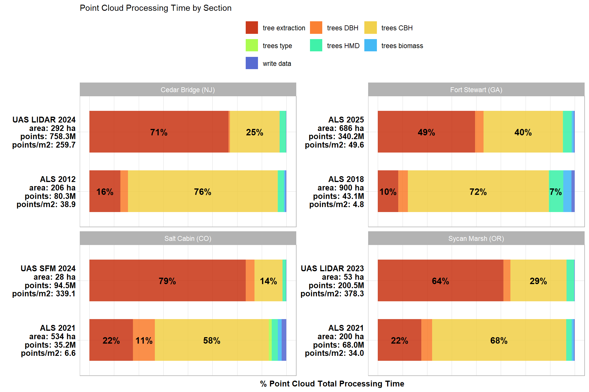

Section 7 Point Cloud Processing Results
7.1 Processing Time
let’s look into the processing time comparison across data sets
the cloud2trees::cloud2trees() program automatically tracks processing time for all sections and stores the tracking data in the “point_cloud_processing_delivery” directory in a file called “processed_tracking_data.csv”
dir_temp <- "../data"
# what processing data?
df_temp <-
list.files(
dir_temp
, pattern = "processed_tracking_data.csv"
, recursive = T
) %>%
dplyr::tibble() %>%
setNames("fpath") %>%
dplyr::mutate(
data_desc = stringr::word(fpath, 2, sep = "/") %>%
stringr::str_remove_all("_processing") %>%
stringr::str_replace_all("_"," ") %>%
stringr::str_squish() %>%
toupper()
, data_type = data_desc %>%
stringr::str_remove_all("[0-9]") %>%
stringr::str_squish()
, study_site = stringr::word(fpath, sep = "/")
, fpath = file.path(dir_temp, fpath)
, fdir = dirname(fpath)
)
# read in processing data
df_temp <- 1:nrow(df_temp) %>%
purrr::map(\(x)
readr::read_csv(
df_temp$fpath[x]
, show_col_types = F
, progress = F
) %>%
dplyr::mutate(
study_site = df_temp$study_site[x]
, data_desc = df_temp$data_desc[x]
)
) %>%
dplyr::bind_rows() %>%
dplyr::inner_join(df_temp, by = dplyr::join_by(study_site,data_desc))
# add in study bounds
study_sites_processing_sf <-
study_sites_sf %>%
dplyr::select(study_site, study_site_lab) %>%
dplyr::inner_join(
df_temp
, by = "study_site"
, relationship = "one-to-many"
)let’s relativize and proportionalize the tracking data
# aggregate the total processing time
study_sites_processing_sf <-
study_sites_processing_sf %>%
dplyr::mutate(
timer_total_time_mins = timer_cloud2raster_mins + timer_raster2trees_mins +
timer_trees_dbh_mins + timer_trees_cbh_mins + timer_trees_type_mins +
timer_trees_hmd_mins + timer_trees_biomass_mins + timer_write_data_mins
, timer_tree_extraction_mins = timer_cloud2raster_mins + timer_raster2trees_mins
, las_area_ha = (las_area_m2/10000)
, points_m2 = number_of_points/las_area_m2
# relative
, dplyr::across(
.cols = tidyselect::starts_with("timer_") & tidyselect::ends_with("_mins")
, .fns = ~ (.x*60)/las_area_ha # sec/ha
# , .fns = ~ .x/las_area_ha # min/ha
, .names = "{.col}_secperha"
# , .names = "{.col}_minperha"
)
# proportion
, dplyr::across(
.cols = c(timer_tree_extraction_mins,
timer_trees_dbh_mins, timer_trees_cbh_mins, timer_trees_type_mins,
timer_trees_hmd_mins, timer_trees_biomass_mins, timer_write_data_mins)
, .fns = ~ .x/timer_total_time_mins
, .names = "{.col}_pct"
)
)
# study_sites_processing_sf %>% dplyr::glimpse()what is all included in this data?
## [1] "study_site"
## [2] "study_site_lab"
## [3] "number_of_points"
## [4] "las_area_m2"
## [5] "timer_cloud2raster_mins"
## [6] "timer_raster2trees_mins"
## [7] "timer_trees_competition_mins"
## [8] "timer_treels_stem_dbh_mins"
## [9] "timer_trees_dbh_mins"
## [10] "timer_trees_cbh_mins"
## [11] "timer_trees_type_mins"
## [12] "timer_trees_hmd_mins"
## [13] "timer_trees_biomass_mins"
## [14] "timer_write_data_mins"
## [15] "timer_total_time_mins"
## [16] "sttng_input_las_dir"
## [17] "sttng_accuracy_level"
## [18] "sttng_max_ctg_pts"
## [19] "sttng_max_area_m2"
## [20] "sttng_dtm_res_m"
## [21] "sttng_chm_res_m"
## [22] "sttng_min_height"
## [23] "sttng_max_height"
## [24] "sttng_ws"
## [25] "sttng_estimate_tree_dbh"
## [26] "sttng_max_dbh"
## [27] "sttng_dbh_model"
## [28] "sttng_estimate_dbh_from_cloud"
## [29] "sttng_estimate_tree_competition"
## [30] "sttng_competition_buffer_m"
## [31] "sttng_competition_max_search_dist_m"
## [32] "sttng_estimate_tree_type"
## [33] "sttng_type_max_search_dist_m"
## [34] "sttng_estimate_tree_hmd"
## [35] "sttng_hmd_tree_sample_n"
## [36] "sttng_hmd_tree_sample_prop"
## [37] "sttng_hmd_estimate_missing_hmd"
## [38] "sttng_estimate_biomass_method"
## [39] "sttng_biomass_max_crown_kg_per_m3"
## [40] "sttng_estimate_tree_cbh"
## [41] "sttng_cbh_tree_sample_n"
## [42] "sttng_cbh_tree_sample_prop"
## [43] "sttng_cbh_which_cbh"
## [44] "sttng_cbh_estimate_missing_cbh"
## [45] "sttng_cbh_min_vhp_n"
## [46] "sttng_cbh_voxel_grain_size_m"
## [47] "sttng_cbh_dist_btwn_bins_m"
## [48] "sttng_cbh_min_fuel_layer_ht_m"
## [49] "sttng_cbh_lad_pct_gap"
## [50] "sttng_cbh_lad_pct_base"
## [51] "sttng_cbh_num_jump_steps"
## [52] "sttng_cbh_min_lad_pct"
## [53] "sttng_cbh_frst_layer_min_ht_m"
## [54] "data_desc"
## [55] "fpath"
## [56] "data_type"
## [57] "fdir"
## [58] "geometry"
## [59] "timer_tree_extraction_mins"
## [60] "las_area_ha"
## [61] "points_m2"
## [62] "timer_cloud2raster_mins_secperha"
## [63] "timer_raster2trees_mins_secperha"
## [64] "timer_trees_competition_mins_secperha"
## [65] "timer_treels_stem_dbh_mins_secperha"
## [66] "timer_trees_dbh_mins_secperha"
## [67] "timer_trees_cbh_mins_secperha"
## [68] "timer_trees_type_mins_secperha"
## [69] "timer_trees_hmd_mins_secperha"
## [70] "timer_trees_biomass_mins_secperha"
## [71] "timer_write_data_mins_secperha"
## [72] "timer_total_time_mins_secperha"
## [73] "timer_tree_extraction_mins_secperha"
## [74] "timer_tree_extraction_mins_pct"
## [75] "timer_trees_dbh_mins_pct"
## [76] "timer_trees_cbh_mins_pct"
## [77] "timer_trees_type_mins_pct"
## [78] "timer_trees_hmd_mins_pct"
## [79] "timer_trees_biomass_mins_pct"
## [80] "timer_write_data_mins_pct"that’s a lot of tracking data, let’s look at the main timing parameters
# format data for plotting/tabling
table_temp <-
study_sites_processing_sf %>%
sf::st_drop_geometry() %>%
dplyr::select(
study_site, study_site_lab, data_desc, data_type, number_of_points, las_area_ha, points_m2
, c(timer_tree_extraction_mins,
timer_trees_dbh_mins, timer_trees_cbh_mins, timer_trees_type_mins,
timer_trees_hmd_mins, timer_trees_biomass_mins, timer_write_data_mins
, timer_total_time_mins
, c(tidyselect::ends_with("_pct") & tidyselect::starts_with("timer_"))
, c(tidyselect::ends_with("_secperha") & tidyselect::starts_with("timer_"))
)
) %>%
tidyr::pivot_longer(
cols = -c(study_site, study_site_lab, data_desc, data_type, number_of_points, las_area_ha, points_m2)
) %>%
dplyr::mutate(
units = stringr::word(name, -1, sep = "_")
, section = name %>%
stringr::str_remove_all("timer_") %>%
stringr::str_remove_all("_mins") %>%
stringr::str_remove_all("_pct") %>%
stringr::str_remove_all("_secperha")
) %>%
dplyr::select(-name) %>%
# dplyr::count(units)
tidyr::pivot_wider(names_from = units, values_from = value) %>%
dplyr::mutate(
mins_lab = scales::comma(mins,accuracy = 0.1)
, perha_lab = scales::comma(secperha,accuracy = 0.01)
, pct_lab = scales::percent(pct,accuracy = 0.1)
# site lab
, big_lab = stringr::str_c(
data_desc
, paste0("area: ", scales::comma(las_area_ha, accuracy = 1, suffix = " ha"))
, paste0("points: ", scales::comma(number_of_points, accuracy = 0.1, scale = 1/1000000, suffix = "M"))
, paste0("points m<sup>-2</sup>: ", scales::comma(points_m2, accuracy = 0.1))
, sep = "<br>"
)
, big_lab_ggplot = stringr::str_c(
data_desc
, paste0("area: ", scales::comma(las_area_ha, accuracy = 1, suffix = " ha"))
, paste0("points: ", scales::comma(number_of_points, accuracy = 0.1, scale = 1/1000000, suffix = "M"))
, paste0("points/m2: ", scales::comma(points_m2, accuracy = 0.1))
, sep = "\n"
)
) %>%
# dplyr::count(section)
dplyr::filter(!is.na(mins)) %>%
# section lab after filter so factor doesn't have rand levels
dplyr::mutate(
section = section %>%
stringr::str_replace_all("_", " ") %>%
stringr::str_remove_all("time") %>%
stringr::str_replace_all("dbh", "DBH") %>%
stringr::str_replace_all("cbh", "CBH") %>%
stringr::str_replace_all("hmd", "HMD") %>%
stringr::str_squish() %>%
forcats::fct_inorder()
)
# table it
table_temp %>%
dplyr::select(study_site_lab,big_lab,section,mins_lab, perha_lab, pct_lab) %>%
kableExtra::kbl(
caption = "Point cloud processing section run time"
, col.names = c(
"Site", "Data"
, "Processing section"
, "time (minutes)"
, "seconds per ha"
, "% of total time"
)
, escape = F
) %>%
kableExtra::kable_styling() %>%
kableExtra::collapse_rows(columns = 1:2, valign = "top")| Site | Data | Processing section | time (minutes) | seconds per ha | % of total time |
|---|---|---|---|---|---|
| Fort Stewart (GA) |
ALS 2018 area: 900 ha points: 43.1M points m-2: 4.8 |
tree extraction | 18.7 | 1.25 | 10.4% |
| trees DBH | 8.7 | 0.58 | 4.8% | ||
| trees CBH | 129.2 | 8.62 | 71.6% | ||
| trees type | 0.3 | 0.02 | 0.2% | ||
| trees HMD | 13.0 | 0.87 | 7.2% | ||
| trees biomass | 7.5 | 0.50 | 4.2% | ||
| write data | 3.1 | 0.20 | 1.7% | ||
| total | 180.6 | 12.04 | NA | ||
|
ALS 2025 area: 686 ha points: 340.2M points m-2: 49.6 |
tree extraction | 134.2 | 11.74 | 49.4% | |
| trees DBH | 11.7 | 1.03 | 4.3% | ||
| trees CBH | 109.2 | 9.55 | 40.2% | ||
| trees type | 0.2 | 0.02 | 0.1% | ||
| trees HMD | 12.0 | 1.05 | 4.4% | ||
| trees biomass | 3.1 | 0.27 | 1.1% | ||
| write data | 1.2 | 0.10 | 0.4% | ||
| total | 271.6 | 23.76 | NA | ||
| Cedar Bridge (NJ) |
ALS 2012 area: 206 ha points: 80.3M points m-2: 38.9 |
tree extraction | 23.9 | 6.96 | 15.7% |
| trees DBH | 5.9 | 1.71 | 3.9% | ||
| trees CBH | 115.5 | 33.59 | 75.9% | ||
| trees type | 0.1 | 0.03 | 0.1% | ||
| trees HMD | 4.8 | 1.41 | 3.2% | ||
| trees biomass | 1.1 | 0.31 | 0.7% | ||
| write data | 0.8 | 0.23 | 0.5% | ||
| total | 152.2 | 44.24 | NA | ||
|
UAS LIDAR 2024 area: 292 ha points: 758.3M points m-2: 259.7 |
tree extraction | 664.8 | 136.59 | 70.5% | |
| trees DBH | 7.8 | 1.60 | 0.8% | ||
| trees CBH | 237.3 | 48.76 | 25.2% | ||
| trees type | 0.5 | 0.10 | 0.1% | ||
| trees HMD | 30.3 | 6.24 | 3.2% | ||
| trees biomass | 0.5 | 0.09 | 0.0% | ||
| write data | 1.2 | 0.24 | 0.1% | ||
| total | 942.3 | 193.62 | NA | ||
| Salt Cabin (CO) |
ALS 2021 area: 534 ha points: 35.2M points m-2: 6.6 |
tree extraction | 22.6 | 2.54 | 22.1% |
| trees DBH | 11.5 | 1.29 | 11.2% | ||
| trees CBH | 59.1 | 6.65 | 57.8% | ||
| trees type | 1.5 | 0.17 | 1.5% | ||
| trees HMD | 3.1 | 0.35 | 3.0% | ||
| trees biomass | 2.0 | 0.22 | 1.9% | ||
| write data | 2.5 | 0.28 | 2.4% | ||
| total | 102.3 | 11.50 | NA | ||
|
UAS SFM 2024 area: 28 ha points: 94.5M points m-2: 339.1 |
tree extraction | 65.4 | 140.77 | 79.3% | |
| trees DBH | 3.7 | 8.04 | 4.5% | ||
| trees CBH | 11.8 | 25.33 | 14.3% | ||
| trees type | 0.0 | 0.02 | 0.0% | ||
| trees HMD | 1.4 | 3.12 | 1.8% | ||
| trees biomass | 0.1 | 0.15 | 0.1% | ||
| write data | 0.1 | 0.13 | 0.1% | ||
| total | 82.5 | 177.56 | NA | ||
| Sycan Marsh (OR) |
ALS 2021 area: 200 ha points: 68.0M points m-2: 34.0 |
tree extraction | 17.8 | 5.35 | 22.1% |
| trees DBH | 4.4 | 1.31 | 5.4% | ||
| trees CBH | 55.0 | 16.50 | 68.1% | ||
| trees type | 0.0 | 0.01 | 0.1% | ||
| trees HMD | 2.3 | 0.68 | 2.8% | ||
| trees biomass | 0.9 | 0.27 | 1.1% | ||
| write data | 0.3 | 0.10 | 0.4% | ||
| total | 80.8 | 24.23 | NA | ||
|
UAS LIDAR 2023 area: 53 ha points: 200.5M points m-2: 378.3 |
tree extraction | 55.9 | 63.31 | 63.7% | |
| trees DBH | 3.1 | 3.52 | 3.5% | ||
| trees CBH | 25.1 | 28.37 | 28.6% | ||
| trees type | 0.0 | 0.01 | 0.0% | ||
| trees HMD | 3.4 | 3.85 | 3.9% | ||
| trees biomass | 0.1 | 0.13 | 0.1% | ||
| write data | 0.1 | 0.13 | 0.1% | ||
| total | 87.8 | 99.33 | NA |
that’s a lot of numbers to digest, let’s plot the data
7.1.1 Point Cloud Processing Time versus Point Density
# per ha time based on point density
ggplot2::ggplot(
data = table_temp %>% dplyr::filter(section == "total")
, mapping = ggplot2::aes(y = secperha, x = points_m2, color = data_type)
) +
ggplot2::geom_point(size = 4, alpha = 0.9) +
ggplot2::scale_color_viridis_d(option = "magma", begin = 0.1, end = 0.5) +
ggplot2::labs(
x = latex2exp::TeX("points $m^{-2}$")
, y = latex2exp::TeX("total seconds $ha^{-1}$")
, color = ""
, subtitle = "Point Cloud Processing Time versus Point Density"
) +
ggplot2::theme_light() +
ggplot2::theme(legend.position = "top")
7.1.2 Point Cloud Processing Time by Section (%)
table_temp %>%
dplyr::filter(section != "total") %>%
dplyr::mutate(section = forcats::fct_rev(section)) %>%
ggplot2::ggplot(
mapping = ggplot2::aes(y = big_lab_ggplot, x = pct, fill = section, group = section)
) +
ggplot2::geom_col(
width = 0.7, alpha=0.8
) +
ggplot2::geom_text(
mapping = ggplot2::aes(
label = scales::percent(ifelse(pct>=0.06,pct,NA), accuracy = 1)
, fontface = "bold"
)
, position = ggplot2::position_stack(vjust = 0.5)
, color = "black", size = 4
) +
ggplot2::facet_wrap(facets = dplyr::vars(study_site_lab), scales = "free_y") +
ggplot2::scale_fill_viridis_d(option = "turbo", begin = 0.1, end = 0.9) +
ggplot2::scale_x_continuous(labels = scales::percent_format()) +
labs(
fill = "", y = ""
, x = "% Point Cloud Total Processing Time"
, subtitle = "Point Cloud Processing Time by Section"
) +
theme_light() +
theme(
legend.position = "top"
, legend.direction = "horizontal"
, legend.title = element_text(size=7)
, axis.title.x = element_text(size=10, face = "bold")
, axis.title.y = element_text(size = 8)
, axis.text.x = element_blank()
, axis.text.y = element_text(color = "black",size=10, face = "bold")
, axis.ticks.x = element_blank()
) +
guides(
fill = guide_legend(nrow = 3, byrow = T, reverse = T, override.aes = list(alpha = 0.9))
)
7.1.3 Point Cloud Processing Time by Section (total)
table_temp %>%
dplyr::filter(section != "total") %>%
dplyr::mutate(section = forcats::fct_rev(section)) %>%
ggplot2::ggplot(
mapping = ggplot2::aes(y = big_lab_ggplot, x = secperha, fill = section, group = section)
) +
geom_text(
data = table_temp %>% dplyr::filter(section == "total")
, mapping = ggplot2::aes(
y = big_lab_ggplot
, x = secperha
, label = scales::comma(secperha,accuracy=0.1,suffix = "\ntotal")
, fontface = "bold"
)
, color = "black", size = 2.3
, hjust = -0.1
) +
ggplot2::geom_col(
width = 0.7, alpha=0.8
) +
ggplot2::geom_text(
mapping = ggplot2::aes(
label = scales::comma(ifelse(secperha>=7.5,secperha,NA), accuracy = 0.1)
, fontface = "bold"
)
, position = ggplot2::position_stack(vjust = 0.5)
, color = "black", size = 3
) +
ggplot2::facet_wrap(facets = dplyr::vars(study_site_lab), scales = "free_y") +
ggplot2::scale_fill_viridis_d(option = "turbo", begin = 0.1, end = 0.9) +
ggplot2::scale_x_continuous(labels = scales::comma_format(), expand = ggplot2::expansion(mult = c(0,0.1))) +
labs(
fill = "", y = ""
, x = latex2exp::TeX("seconds $ha^{-1}$")
, subtitle = "Point Cloud Processing Time by Section"
) +
theme_light() +
theme(
legend.position = "top"
, legend.direction = "horizontal"
, legend.title = element_text(size=7)
, axis.title.x = element_text(size=10, face = "bold")
, axis.title.y = element_text(size = 8)
, axis.text.x = element_blank()
, axis.text.y = element_text(color = "black",size=10, face = "bold")
, axis.ticks.x = element_blank()
) +
guides(
fill = guide_legend(nrow = 3, byrow = T, reverse = T, override.aes = list(alpha = 0.9))
)
7.2 Silvicultural Metrics
cloud2trees has some internal functions to identify cloud2trees::cloud2trees() outputs, read the outputs, and crop them to a given AOI, however, these are internal to the program (for now). We can use cloud2trees::cloud2trees_to_lanl_trees() (detailed in the next section) to access this functionality since all we need to do is clip the tree list which we can then aggregate to get common silvicultural metrics
7.2.1 Example
here is an example to show the data we’ll get back from the calc_silv_metrics() function we define below
# here's an example
# study_sites_processing_sf %>% dplyr::slice(6) %>% dplyr::glimpse()
# using the internal fn's would be: read_trees_flist() %>% clip_tree_list_aoi()
ans_temp <- cloud2trees::cloud2trees_to_lanl_trees(
input_dir = study_sites_processing_sf$fdir[6]
, study_boundary = study_sites_processing_sf %>% dplyr::slice(6)
, bbox_aoi = F, buffer = 0 # this is the key to get only trees in our AOI
)
# ans_temp %>% names()let’s make a function to summarize the data and create common silvicultural metrics within our stand boundary
###################################################################################
# define a function to convert columns in data frame from metric to imperial
# see:
# https://www.forestnb.com/archives/forest-nb-news/resources/conversions/
# https://www.ars.usda.gov/is/np/agbyproducts/agbyappendix.pdf
###################################################################################
calc_imperial_units_fn <- function(df) {
df %>%
# convert to imperial units
dplyr::mutate(
dplyr::across(
.cols = tidyselect::ends_with("_cm")
, ~ .x * 0.394
, .names = "{.col}_in"
)
, dplyr::across(
.cols = tidyselect::ends_with("_m")
, ~ .x * 3.281
, .names = "{.col}_ft"
)
, dplyr::across(
.cols = tidyselect::ends_with("_m2_per_ha")
, ~ .x * 4.359
, .names = "{.col}_ftac"
)
, dplyr::across(
.cols = tidyselect::ends_with("_kg_per_ha")
, ~ .x * 0.892178
, .names = "{.col}_lbsac"
)
, dplyr::across(
.cols = tidyselect::ends_with("_per_ha") &
!tidyselect::ends_with("_m2_per_ha") &
!tidyselect::ends_with("_kg_per_ha")
, ~ .x * 0.405
, .names = "{.col}_ac"
)
, dplyr::across(
.cols = tidyselect::ends_with("_area_ha")
, ~ .x * 2.471
, .names = "{.col}_ac"
)
, dplyr::across(
.cols = tidyselect::ends_with("kg_per_m2")
, ~ .x * 0.20482
, .names = "{.col}_lbsft2"
)
, dplyr::across(
.cols = tidyselect::ends_with("kg_per_m3")
, ~ .x * 0.0624
, .names = "{.col}_lbsft3"
)
, dplyr::across(
.cols = tidyselect::ends_with("_m2") & !tidyselect::ends_with("per_m2")
, ~ .x * 10.764
, .names = "{.col}_ft2"
)
) %>%
dplyr::rename_with(
.fn = function(x){dplyr::case_when(
stringr::str_ends(x,"_cm_in") ~ stringr::str_replace(x,"_cm_in","_in")
, stringr::str_ends(x,"_m_ft") ~ stringr::str_replace(x,"_m_ft","_ft")
, stringr::str_ends(x,"_m2_per_ha_ftac") ~ stringr::str_replace(x,"_m2_per_ha_ftac","_ft2_per_ac")
, stringr::str_ends(x,"_kg_per_ha_lbsac") ~ stringr::str_replace(x,"_kg_per_ha_lbsac","_lbs_per_ac")
, stringr::str_ends(x,"_per_ha_ac") ~ stringr::str_replace(x,"_per_ha_ac","_per_ac")
, stringr::str_ends(x,"_area_ha_ac") ~ stringr::str_replace(x,"_area_ha_ac","_area_ac")
, stringr::str_ends(x,"_kg_per_m2_lbsft2") ~ stringr::str_replace(x,"_kg_per_m2_lbsft2","_lbs_per_ft2")
, stringr::str_ends(x,"_kg_per_m3_lbsft3") ~ stringr::str_replace(x,"_kg_per_m3_lbsft3","_lbs_per_ft3")
, stringr::str_ends(x,"_m2_ft2") ~ stringr::str_replace(x,"_m2_ft2","_ft2")
, TRUE ~ x
)}
)
}
###################################################################################
### stand-level summaries
###################################################################################
calc_silv_metrics <- function(tree_list, stand_area_ha = NULL, study_boundary = NULL, calc_imperial_units = F) {
# get study area
if(!is.null(study_boundary)){
# bounds check
if(
!inherits(study_boundary,"sf")
&& !inherits(study_boundary,"sfc")
){stop("study_boundary must be sf class object")}
if(is.na(sf::st_crs(study_boundary))){stop("study_boundary does not have a CRS")}
if(inherits(study_boundary,"sf") && nrow(study_boundary)!=1){
stop("study_boundary must only have a single record geometry")
}
if(inherits(study_boundary,"sfc") && length(study_boundary)!=1){
stop("study_boundary must only have a single record geometry")
}
if(
!all( sf::st_is(study_boundary, c("POLYGON","MULTIPOLYGON")) )
){
stop("study_boundary must contain POLYGON type geometry only")
}
# area
xxstand_area_ha <- study_boundary %>%
sf::st_area() %>%
as.numeric() %>%
`/`(10000)
}else if(is.numeric(stand_area_ha)){
xxstand_area_ha <- stand_area_ha[1]
}else{
stop("must provide `stand_area_ha` as numeric or `study_boundary` as sf object")
}
if(is.null(xxstand_area_ha) || is.na(xxstand_area_ha) || dplyr::coalesce(xxstand_area_ha,0)<=0){
stop("could not determine valid stand_area_ha")
}
# summarize tree list
if(!inherits(tree_list,"data.frame")){stop("tree_list must be data.frame class object")}
###### !!!!!!!!!!!!!!!!!!!!!!!!!!!!!!!!!!!!!!! NEED TO PUT IN CHECKS FOR COLUMNS USED
# see: cloud2trees::check_df_cols_all_missing()
if( !any(stringr::str_detect(names(tree_list), "landfire_crown_biomass_kg")) ){
tree_list <- tree_list %>% dplyr::mutate(landfire_crown_biomass_kg=as.numeric(NA))
}
if( !any(stringr::str_detect(names(tree_list), "cruz_crown_biomass_kg")) ){
tree_list <- tree_list %>% dplyr::mutate(cruz_crown_biomass_kg=as.numeric(NA))
}
if( !any(stringr::str_detect(names(tree_list), "landfire_tree_kg_per_m3")) ){
tree_list <- tree_list %>% dplyr::mutate(landfire_tree_kg_per_m3=as.numeric(NA))
}
if( !any(stringr::str_detect(names(tree_list), "cruz_tree_kg_per_m3")) ){
tree_list <- tree_list %>% dplyr::mutate(cruz_tree_kg_per_m3=as.numeric(NA))
}
# agg
agg <- tree_list %>%
sf::st_drop_geometry() %>%
dplyr::ungroup() %>%
dplyr::summarise(
n_trees = dplyr::n()
, mean_dbh_cm = mean(dbh_cm, na.rm = T)
, mean_tree_height_m = mean(tree_height_m, na.rm = T)
, mean_tree_cbh_m = mean(tree_cbh_m, na.rm = T)
, loreys_height_m = sum(basal_area_m2*tree_height_m, na.rm = T) / sum(basal_area_m2, na.rm = T)
, basal_area_m2 = sum(basal_area_m2, na.rm = T)
, sum_dbh_cm_sq = sum(dbh_cm^2, na.rm = T)
, landfire_crown_biomass_kg = sum(landfire_crown_biomass_kg, na.rm = F)
, cruz_crown_biomass_kg = sum(cruz_crown_biomass_kg, na.rm = F)
, mean_landfire_tree_kg_per_m3 = mean(landfire_tree_kg_per_m3, na.rm = T)
, mean_cruz_tree_kg_per_m3 = mean(cruz_tree_kg_per_m3, na.rm = T)
) %>%
dplyr::ungroup() %>%
dplyr::mutate(
stand_area_ha = xxstand_area_ha
, trees_per_ha = (n_trees/stand_area_ha)
, basal_area_m2_per_ha = (basal_area_m2/stand_area_ha)
, qmd_cm = sqrt(sum_dbh_cm_sq/n_trees)
, landfire_cfl_kg_per_m2 = landfire_crown_biomass_kg/(stand_area_ha*10000)
, cruz_cfl_kg_per_m2 = cruz_crown_biomass_kg/(stand_area_ha*10000)
) %>%
dplyr::select(-c(sum_dbh_cm_sq,landfire_crown_biomass_kg,cruz_crown_biomass_kg))
# imperial
if(calc_imperial_units){
agg <- calc_imperial_units_fn(agg)
}
return(agg)
}check out the data structure returned by the calc_silv_metrics() function
calc_silv_metrics(tree_list = ans_temp$tree_list ,study_boundary = ans_temp$aoi, calc_imperial_units = T) %>%
dplyr::glimpse()## Rows: 1
## Columns: 27
## $ n_trees <int> 3571
## $ mean_dbh_cm <dbl> 16.34315
## $ mean_tree_height_m <dbl> 9.180978
## $ mean_tree_cbh_m <dbl> 4.284259
## $ loreys_height_m <dbl> 14.18135
## $ basal_area_m2 <dbl> 102.9316
## $ mean_landfire_tree_kg_per_m3 <dbl> 0.1129203
## $ mean_cruz_tree_kg_per_m3 <dbl> 0.2209229
## $ stand_area_ha <dbl> 11.72581
## $ trees_per_ha <dbl> 304.542
## $ basal_area_m2_per_ha <dbl> 8.778214
## $ qmd_cm <dbl> 19.15731
## $ landfire_cfl_kg_per_m2 <dbl> 0.2577802
## $ cruz_cfl_kg_per_m2 <dbl> NA
## $ mean_dbh_in <dbl> 6.4392
## $ qmd_in <dbl> 7.547981
## $ mean_tree_height_ft <dbl> 30.12279
## $ mean_tree_cbh_ft <dbl> 14.05665
## $ loreys_height_ft <dbl> 46.52901
## $ basal_area_ft2_per_ac <dbl> 38.26423
## $ trees_per_ac <dbl> 123.3395
## $ stand_area_ac <dbl> 28.97447
## $ landfire_cfl_lbs_per_ft2 <dbl> 0.05279854
## $ cruz_cfl_lbs_per_ft2 <dbl> NA
## $ mean_landfire_tree_lbs_per_ft3 <dbl> 0.007046227
## $ mean_cruz_tree_lbs_per_ft3 <dbl> 0.01378559
## $ basal_area_ft2 <dbl> 1107.9567.2.2 Study Area Summaries
let’s calculate the metrics for all study areas
# map the process over all data
silv_metrics_by_data <- 1:nrow(study_sites_processing_sf) %>%
purrr::map(function(x){
# clip the data
ans_temp <- cloud2trees::cloud2trees_to_lanl_trees(
input_dir = study_sites_processing_sf$fdir[x]
, study_boundary = study_sites_processing_sf %>% dplyr::slice(x)
, bbox_aoi = F, buffer = 0 # this is the key to get only trees in our AOI
)
# silv metrics
calc_silv_metrics(
tree_list = ans_temp$tree_list
, study_boundary = ans_temp$aoi
, calc_imperial_units = T
) %>%
dplyr::mutate(
study_site = study_sites_processing_sf$study_site[x]
, study_site_lab = study_sites_processing_sf$study_site_lab[x]
, data_desc = study_sites_processing_sf$data_desc[x]
, data_type = study_sites_processing_sf$data_type[x]
)
}) %>%
dplyr::bind_rows()
# huh?
silv_metrics_by_data %>% dplyr::glimpse()7.2.2.1 Metric units
silv_metrics_by_data %>%
dplyr::mutate(
nlab = paste0(study_site_lab,"<br>",scales::comma(stand_area_ha,accuracy=1)," ha")
) %>%
dplyr::relocate(nlab) %>%
dplyr::select(
nlab
, data_desc
# different
, n_trees
, trees_per_ha
, mean_tree_height_m
, loreys_height_m
, mean_dbh_cm
, qmd_cm
, basal_area_m2_per_ha
, mean_landfire_tree_kg_per_m3
, mean_cruz_tree_kg_per_m3
) %>%
dplyr::mutate(
dplyr::across(c(n_trees), ~scales::comma(.x,accuracy=1))
, dplyr::across(
-c(nlab,data_desc,n_trees,tidyselect::ends_with("3"))
, ~scales::comma(.x,accuracy=0.1)
)
, dplyr::across(
tidyselect::ends_with("3")
, ~scales::comma(.x,accuracy=0.001)
)
) %>%
kableExtra::kbl(
caption = "Stand summary metrics in metric units"
, col.names = c(
"site","collection"
, "trees"
, "trees ha<sup>-1</sup>"
, "mean<br>tree ht. (m)"
, "Lorey's<br>tree ht. (m)"
, "mean<br>DBH (cm)"
, "QMD (cm)"
, "BA (m<sup>2</sup> ha<sup>-1</sup>)"
, "mean<br>CBD (kg m<sup>-3</sup>)<br>LANDFIRE"
, "mean<br>CBD (kg m<sup>-3</sup>)<br>Cruz"
)
, escape = F
) %>%
kableExtra::kable_styling(font_size = 10.5) %>%
kableExtra::collapse_rows(columns = 1:2, valign = "top") | site | collection | trees | trees ha-1 |
mean tree ht. (m) |
Lorey’s tree ht. (m) |
mean DBH (cm) |
QMD (cm) | BA (m2 ha-1) |
mean CBD (kg m-3) LANDFIRE |
mean CBD (kg m-3) Cruz |
|---|---|---|---|---|---|---|---|---|---|---|
|
Fort Stewart (GA) 306 ha |
ALS 2018 | 152,917 | 499.6 | 17.5 | 21.4 | 22.2 | 23.9 | 22.4 | 0.235 | NA |
| ALS 2025 | 74,205 | 242.6 | 19.0 | 22.8 | 24.9 | 26.7 | 13.6 | 0.358 | NA | |
|
Cedar Bridge (NJ) 147 ha |
ALS 2012 | 110,993 | 754.9 | 8.9 | 11.9 | 15.4 | 17.0 | 17.2 | 0.239 | NA |
| UAS LIDAR 2024 | 69,865 | 475.2 | 12.3 | 14.4 | 22.5 | 23.9 | 21.3 | 0.199 | NA | |
|
Salt Cabin (CO) 12 ha |
ALS 2021 | 7,224 | 615.6 | 7.7 | 12.6 | 12.5 | 14.7 | 10.4 | 0.094 | 0.292 |
| UAS SFM 2024 | 3,571 | 304.5 | 9.2 | 14.2 | 16.3 | 19.2 | 8.8 | 0.113 | 0.221 | |
|
Sycan Marsh (OR) 16 ha |
ALS 2021 | 4,205 | 257.5 | 12.7 | 18.5 | 24.2 | 27.9 | 15.7 | 0.217 | 0.420 |
| UAS LIDAR 2023 | 4,435 | 271.6 | 11.5 | 19.1 | 22.4 | 27.3 | 15.9 | 0.147 | 0.299 |
7.2.2.2 Imperial units
silv_metrics_by_data %>%
dplyr::mutate(
nlab = paste0(study_site_lab,"<br>",scales::comma(stand_area_ac,accuracy=1)," ac")
) %>%
dplyr::relocate(nlab) %>%
dplyr::select(
nlab
, data_desc
# different
, n_trees
, trees_per_ac
, mean_tree_height_ft
, loreys_height_ft
, mean_dbh_in
, qmd_in
, basal_area_ft2_per_ac
, mean_landfire_tree_lbs_per_ft3
, mean_cruz_tree_lbs_per_ft3
) %>%
dplyr::mutate(
dplyr::across(c(n_trees), ~scales::comma(.x,accuracy=1))
, dplyr::across(
-c(nlab,data_desc,n_trees,tidyselect::ends_with("3"))
, ~scales::comma(.x,accuracy=0.1)
)
, dplyr::across(
tidyselect::ends_with("3")
, ~scales::comma(.x,accuracy=0.001)
)
) %>%
kableExtra::kbl(
caption = "Stand summary metrics in imperial units"
, col.names = c(
"site","collection"
, "trees"
, "trees ac<sup>-1</sup>"
, "mean<br>tree ht. (ft)"
, "Lorey's<br>tree ht. (ft)"
, "mean<br>DBH (in)"
, "QMD (in)"
, "BA (ft<sup>2</sup> ac<sup>-1</sup>)"
, "mean<br>CBD (lb ft<sup>-3</sup>)<br>LANDFIRE"
, "mean<br>CBD (lb ft<sup>-3</sup>)<br>Cruz"
)
, escape = F
) %>%
kableExtra::kable_styling(font_size = 10.5) %>%
kableExtra::collapse_rows(columns = 1:2, valign = "top") | site | collection | trees | trees ac-1 |
mean tree ht. (ft) |
Lorey’s tree ht. (ft) |
mean DBH (in) |
QMD (in) | BA (ft2 ac-1) |
mean CBD (lb ft-3) LANDFIRE |
mean CBD (lb ft-3) Cruz |
|---|---|---|---|---|---|---|---|---|---|---|
|
Fort Stewart (GA) 756 ac |
ALS 2018 | 152,917 | 202.3 | 57.4 | 70.2 | 8.7 | 9.4 | 97.5 | 0.015 | NA |
| ALS 2025 | 74,205 | 98.2 | 62.4 | 74.9 | 9.8 | 10.5 | 59.3 | 0.022 | NA | |
|
Cedar Bridge (NJ) 363 ac |
ALS 2012 | 110,993 | 305.7 | 29.2 | 39.1 | 6.1 | 6.7 | 75.0 | 0.015 | NA |
| UAS LIDAR 2024 | 69,865 | 192.4 | 40.3 | 47.4 | 8.9 | 9.4 | 92.8 | 0.012 | NA | |
|
Salt Cabin (CO) 29 ac |
ALS 2021 | 7,224 | 249.3 | 25.3 | 41.3 | 4.9 | 5.8 | 45.4 | 0.006 | 0.018 |
| UAS SFM 2024 | 3,571 | 123.3 | 30.1 | 46.5 | 6.4 | 7.5 | 38.3 | 0.007 | 0.014 | |
|
Sycan Marsh (OR) 40 ac |
ALS 2021 | 4,205 | 104.3 | 41.8 | 60.5 | 9.6 | 11.0 | 68.5 | 0.014 | 0.026 |
| UAS LIDAR 2023 | 4,435 | 110.0 | 37.8 | 62.7 | 8.8 | 10.8 | 69.5 | 0.009 | 0.019 |